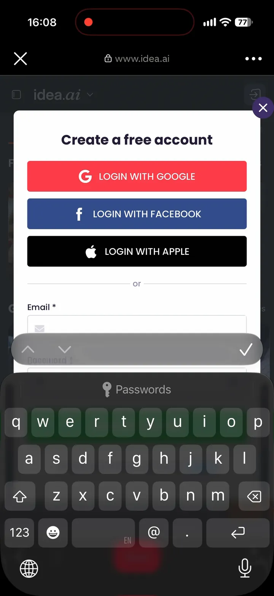
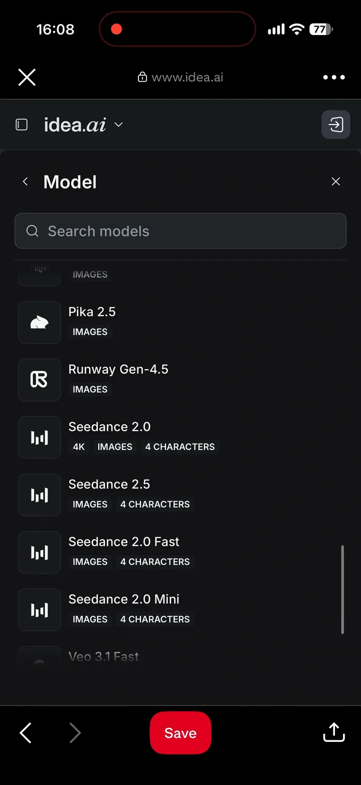
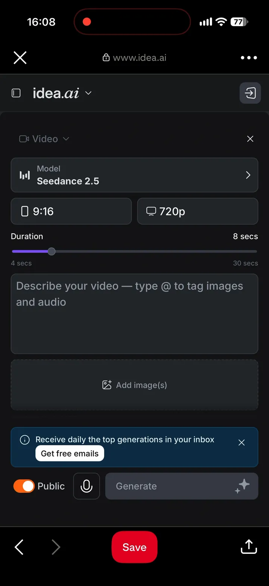
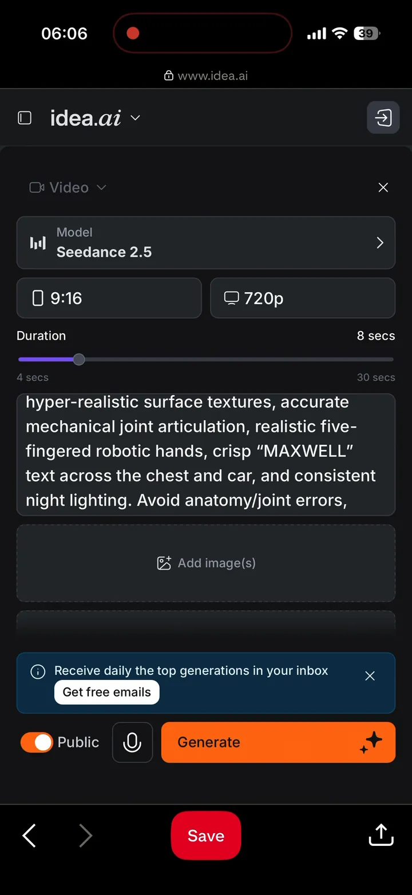
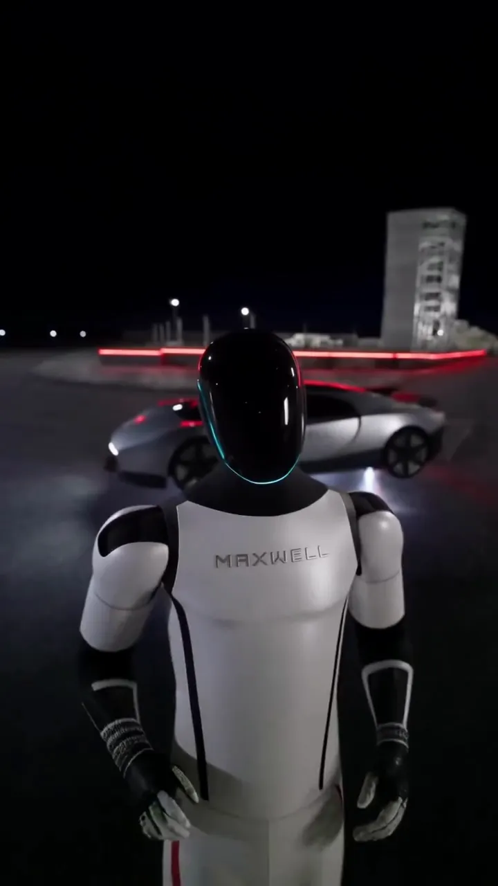

Seedance 2.5 Free Trial: Where to Get a Clip Without a Watermark (2026)
Short answer: yes, a Seedance 2.5 free trial is easy to find, but most of them cover one short clip or a few seconds. The MaxwellFrame (Idea) free trial gives 25,000 credits, enough for a full 720p clip or about 30 seconds of 480p generation with the Seedance 2.5 model, with no watermark on the download. Below is every free route I checked, as of October 2026.
Disclosure: some links below are referral links. If you sign up through one of them, I may earn a commission, and you get access to free trial generations.
I just wanted one clean vertical clip
I make short AI videos for Pinterest and Reels. For a new one I needed a single 8-second vertical shot from Seedance 2.5, ByteDance's newest video model (released July 31, 2026). Nine by sixteen, 720p, and no logo stamped in the corner. That last part turned out to be the hard one.
So I treated this like a receipt. What does each "free" offer actually hand you? Credits in, video out.
Where to get a Seedance 2.5 free trial (October 2026)
| Where | What you get free | Enough for a Seedance 2.5 clip? | Watermark on free downloads | What I noticed |
|---|---|---|---|---|
| MaxwellFrame (Idea) | Free trial: 25,000 credits | About 30 seconds at 480p | No | All video and image models inside the trial. After it, MaxwellFrame (Idea) offers a subscription; decline it and nothing is charged. |
| Dreamina (ByteDance) | 120 credits a day (US free accounts) | About 3 seconds at 720p — shorter than the 4-second minimum | Yes, removing it is a paid feature | The official home of Seedance. Its 4-free-generations launch offer has ended. |
| SeeGen AI | 200 credits after signup + joining Discord | One 5-second 480p clip (150 credits) | No | Discord step before you can generate. |
| Topview AI | 5 credits | One 7-second 480p clip (4.9 credits) | Yes | Tiny, but it covered a 2.5 test. |
| WaveSpeed AI | $1 for eligible new accounts | One 5-second 480p clip ($0.81) | Yes | API-style pricing, per second. |
| Seedance.tv | 10 welcome credits | One starter video, per the site | No, per the site | Not a ByteDance site, despite the name. |
Sources and check dates for every row are at the end of this article.
Honestly, people! Outside MaxwellFrame (Idea), the best free offer here is one 7-second clip at 480p.
How I set it up on MaxwellFrame (Idea)
-
Create an account. MaxwellFrame (Idea) asks you to sign up before the first generation: Google, Facebook, Apple or email.

-
Pick the model. Open the video generator and choose Seedance 2.5 from the model list. Seedance 2.0, 2.0 Fast and 2.0 Mini sit right next to it.

-
Set the shot. I used 9:16, 720p, 8 seconds. The duration slider goes from 4 to 30 seconds.

-
Paste the prompt and check the Public switch. It was on by default for me. If you don't want your clip in the public feed, turn it off before you press Generate.

-
Generate. The Generate button shows the credit cost before you spend anything.

What I found
- The trial covers a full 720p clip or about 30 seconds of 480p generation. Most other free offers stop at four to seven seconds at 480p.
- No watermark on the download. On Dreamina's free plan the same model comes with a logo you can only remove by paying.
- Saying no to the subscription costs nothing. When the trial runs out, MaxwellFrame (Idea) offers a plan; if you decline, no charge follows.
The dissenting opinion
"But Dreamina is free every day!"
True. If you only want to see what Seedance looks like and don't care about the logo, Dreamina's daily credits are the official route. The catch is arithmetic: at 720p, 120 credits buy about three seconds of Seedance 2.5, and the shortest clip is four. And the free download is branded.
My split: if you're just curious, use Dreamina. If you need a clip you can post, use a trial that covers a whole clip and gives you a clean file.
FAQ
Is Seedance 2.5 free? You can try it with trial credits: the 25,000 credits from MaxwellFrame (Idea) cover a full 720p clip or about 30 seconds of 480p generation with Seedance 2.5, and most others cover a 4-to-7-second clip at 480p.
Can I get Seedance 2.5 without a watermark for free? Yes, within a trial. The MaxwellFrame (Idea) trial clip downloads without a watermark. Dreamina's free downloads have one.
What happens after the MaxwellFrame (Idea) trial? It offers a subscription. If you decline, nothing is charged (as of October 2026).
Is Seedance 2.5 unlimited anywhere for free? No. Every clip costs real compute, so every free offer has a limit. Sites promising "unlimited free Seedance" are worth a second look at the fine print.
Is there an official Seedance app I can download? ByteDance's official routes include Dreamina, CapCut and its BytePlus API. Skip APKs that claim to be "Seedance free"; they aren't from ByteDance.
Back to the receipt
I wanted one clean 8-second vertical clip. Credits in: trial credits, not my card. Video out: an 8-second vertical clip, no logo.
If you want to try the same setup, here's the MaxwellFrame (Idea) free trial. Pick Seedance 2.5, and set 9:16 and 720p. You be the judge.
Sources (checked October 30, 2026)
- MaxwellFrame (Idea) trial terms, no watermark, after-trial offer: my own account, October 30, 2026.
- Dreamina free credits: Dreamina free credits FAQ, updated Oct 27, 2026. Watermark removal is listed as a paid benefit on Dreamina's plan pages.
- Dreamina 720p rate (37 credits/second) and the ended launch offer: BudgetPixel, Oct 26, 2026; HokAI, Oct 10, 2026.
- SeeGen, Topview, WaveSpeed allowances and test costs: SeeGen AI test of 21 sites, Oct 10, 2026 (SeeGen's own blog).
- Seedance.tv welcome credits: Seedance.tv, Aug 25, 2026 (the site's own claim); it is not a ByteDance site (BudgetPixel, Oct 26, 2026).
- Seedance 2.5 release date and official routes: ByteDance Seed; AiSuperSmart, Sep 2, 2026.